扉页
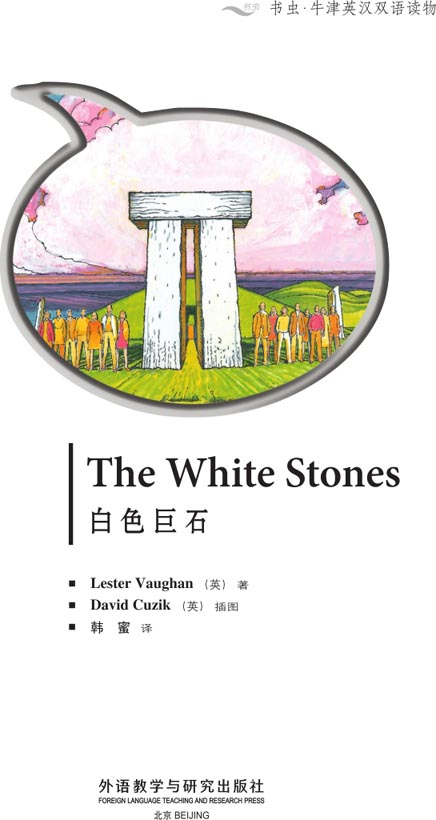
Copyright
Copyright © Foreign Language Teaching and Research Press 2006
All rights reserved. No part of this publication may be reproduced or distributed by any means, or stored in a database or retrieval system, without the prior written permission of Foreign Language Teaching and Research Press.
本书版权由外语教学与研究出版社独家所有。如未获得该社书面同意，书中任何部分之文字及图片，不得用任何方式抄袭、节录、翻印或存储利用于任何数据库及检索系统等。
Published by Foreign Language Teaching and Research Press
No. 19 Xisanhuan Beilu
Beijing, China 100089
http://www.fltrp.com
版权页
京权图字 01-2006-2803
Originally published by Oxford University Press, Great Clarendon Street, Oxford. ©2000
This edition is licensed for sale in the People's Republic of China only and not for export therefrom.
'Oxford' is a registered trademark of Oxford University Press.
只限中华人民共和国境内销售，不包括香港、澳门特别行政区及台湾省。不得出口。
图书在版编目（CIP）数据
白色巨石＝The White Stones／（英）沃恩（Vaughan, L.）著．—北京：外语教学与研究出版社，2006.5（2007.3重印）
（书虫·牛津英汉双语读物）
ISBN 978-7-5600-5450-6
Ⅰ．白… Ⅱ．沃… Ⅲ．①英语—语言读物 ②故事—英国—现代 Ⅳ．H319.4:I
中国版本图书馆CIP数据核字（2006）第023531号
出版人：于春迟
责任编辑：田娜
封面设计：孙莉明
出版发行：外语教学与研究出版社
社 址：北京市西三环北路19号（100089）
网 址：http://www.fltrp.com
书 号：ISBN 978-7-5600-5450-6
* * *
制售盗版必究 举报查实奖励
版权保护办公室举报电话：（010）88817519
目录
The White Stones
The White Stones
1 Your name is Chris Ellison and you are from London in England. You are on a ferry. The ferry is going to the island of Skaran in Ireland. You are sitting next to a woman. She smiles.
'Are you on holiday?' she asks.
'No,' you say. 'I'm an archaeologist. I want to study the megalithic stones on Skaran. The stones are very interesting. They're very old. But we don't know much about them.'
The woman stops smiling. 'The people on the island don't like archaeologists,' she says.
■Go to 11.
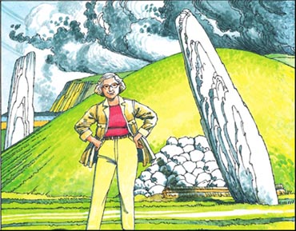
2 You walk to the stones. There are nine big stones and one small stone. Two of the stones are very big and have another stone on top.
You look at the small stone. It is red on top.
■Go to 34.
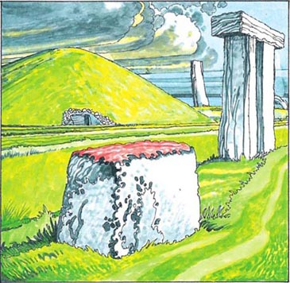
3 You try to hit the man but the man hits you first.
■Go to 24.
4 You walk around the hill. You see a red car behind the hill. There are some boxes in the car.
■You go to the old house. Go to 18.
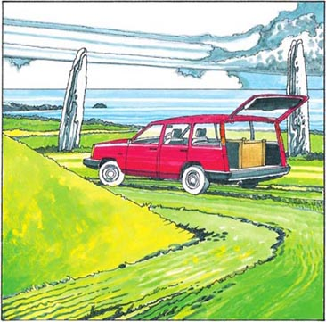
5 You see that the liquid is coming out of a hole under the car.
■You phone a garage. Go to 32.
■You drive the car to your home. Go to 19.
6 You get in your car. You look at more megalithic stones and tombs in the north of the island. They are beautiful in the evening. There are always tombs near the megalithic stones. It is late when you arrive home.
The next day you go to the town of Langrun. You go to some shops and buy some things. What do you do next?
■You go home. Go to 16.
■You go to the Stones of Clayonag. Go to 20.
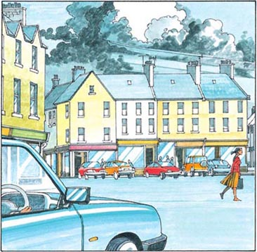
7 You drive slowly down the hill. Ten minutes later you look behind you. You cannot see the red car.
You go past a village. Then you go down a hill to Clayonag. You see a lot of megalithic stones near the sea. It is very beautiful. You stop your car and get out.
■Go to 34.
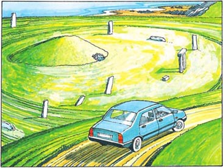
8 You go to the village and you ask some people about the megalithic stones. Nobody wants to talk about them.
■You go home. Go to 28.
■You go back to Clayonag. Go to 34.
9 You look through the door of the tomb. At the back of the tomb there is a stone table. The sun is shining on the table.
■Go to 27.
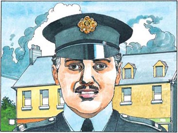
10 You go to the village and find a policeman. You tell him about the things that are happening to you.
He says, 'People in the village don't like archaeologists because they take our treasures. Perhaps you need to go home to London.'
■You go to the old house. Go to 16.
■You look at more stones on the island. Go to 6.
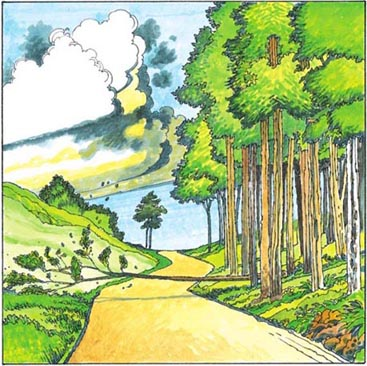
11 Half an hour later, the ferry stops at the island.
You get in your car and drive off the ferry. You drive the car down a small road. In front of you, there are some trees next to the road. One of the trees begins to move. You stop your car quickly. The tree falls in front of your car.
You get out of your car.
'Is there somebody behind the trees?' you ask. What do you do?
■You go to the trees and look for somebody. Go to 23.
■You move the tree from the road. Go to 33.
12 You drive very fast but the road is not very good.
Your car leaves the road. Then everything goes black.
■Go to 24.
13 You go into the tomb. You see some pictures of knives on the wall. You hear a noise. Everything goes dark. You go to the door. You cannot open it.
'Open the door!' you shout, but nobody comes.
You are afraid. You wait for a very long time but nobody comes.
■You go to the back of the tomb. Go to 17.
■You stay near the door. Go to 26.
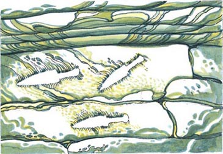
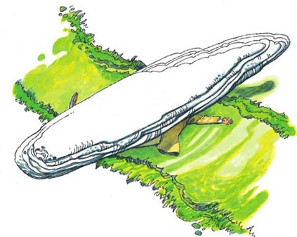
14 The American woman walks nearer to you.
Suddenly a megalithic stone begins to move. The stone is behind the woman. She does not see that the stone is moving.
'Look!' you say. 'The stone is falling!'
She smiles. 'I'm not stupid, you know,' she says.
She does not look behind her. The megalithic stone makes a lot of noise. It falls on the woman.
You see the man with the long black hair. He is coming down the road. When he sees the woman under the stone, he runs away.
■Go to 29.
15 You drive to your house and get out of your car.
The American woman is standing near your house. She is smiling.
'Would you like to go to the Stones of Clayonag tomorrow?' she asks. 'I can't go with you but it's an interesting and important day. It's June 21. It's the longest day of the year. A lot of people go to Clayonag every year. You must go there early in the morning.'
'Thank you,' you say. You go into your house.
■Go to 21.
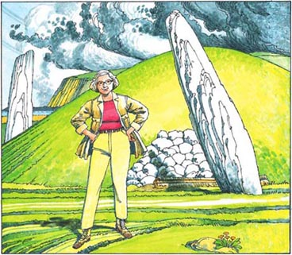
16 You drive home. When you are near your house, a big stone hits the windscreen of your car. You stop quickly. You get out. Behind you there is a tall man with long black hair. He is running towards you.
■You run away. Go to 31.
■You hit the man. Go to 3.
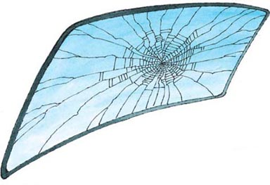
17 You go to the back of the tomb. There is a stone table there. Near the table is a big stone. You take the stone and you go back to the door. You hit the door with the stone. You break the door and you get out of the tomb.
■Go to 28.
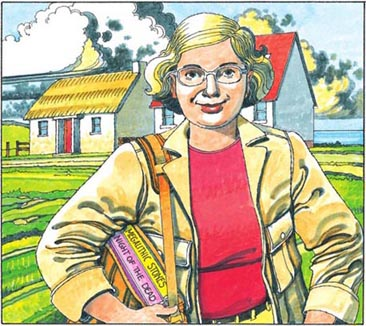
18 When you are near the old house, you meet a woman with blond hair. 'Hello,' she says. 'Are you staying at the old house?'
'Yes,' you say. 'I'm renting it for six weeks.'
'My name's Sarah. I'm staying at the new house,' she says. 'I'm on holiday here. I'm from Los Angeles in America. Are you on holiday?'
'No,' you say, 'I'm an archaeologist. I want to study the megalithic stones on the island.'
'How interesting! I don't know anything about those things,' she says.
■You go to the old house. Go to 30.
19 You drive the car. When you are going down a hill, you cannot stop the car. Your car hits a tree.
■Go to 24.
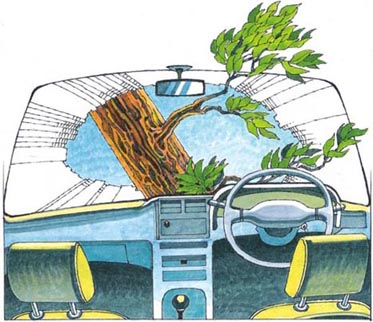
20 You go to the Stones of Clayonag. You look at the stones and wait but nothing happens. You go home late.
For the next two weeks you go around the island and look at the megalithic stones. Nothing more happens to you. You do not find the answer to the mystery.
■Go to 1 and try again.
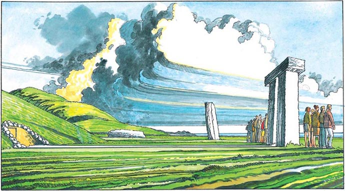
21 The next day you get up very early. You drive to the Stones of Clayonag. When you arrive, you see a lot of cars. You get out of your car and walk to the tomb. There are a lot of people near the tomb. They are looking at the sun, and waiting.
Slowly the sun comes up. The sun shines between the two big stones. It shines into the door of the tomb. When this happens, the people begin to sing.
■You look through the door of the tomb. Go to 9.
■You do not look through the door. Go to 27.
22 You go to the sea. It is beautiful but you do not see any people or megalithic stones.
You go back to the tomb. You think you see a man. He is behind one of the megalithic stones.
■Go to 34.
23 You run into the trees. You see a tall man with long black hair. He runs away. You go back to your car.
■Go to 33.
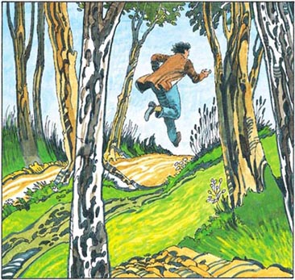
24 When you open your eyes, you are in a bed in a white room. A woman is looking at you. 'Hello,'she says. 'I'm Doctor O'Connor. Everything is all right. You're in hospital.'
A week later you leave the hospital. You do not know the answer to the mystery.
■Go back to 1 and start again!
25 You stop your car. You look behind you. The red car stops too.
■Go to 7.
26 You stay next to the door. Four hours later the door opens. You go out of the tomb. It is dark. There is nobody near the tomb. You think you see a man. He is running towards the road.
■You get in your car and drive home. Go to 15.
27 An hour later everybody gets in their cars and leaves Clayonag. You go to your car. There is some liquid on the road under the car.
■You look under the car. Go to 5.
■You drive the car to your home. Go to 19.
■You phone a garage. Go to 32.

28 You go home. When you are near the old house, you see a red car. There is a man near the car. He is tall with long black hair. He is with the old American woman. When he sees you, he gets into his car. He drives away.
■Go to 15.
29 You phone the police. They arrive ten minutes later. The police look at the stone. 'After all these years, why does the stone fall now?' says a policeman.
'It's a mystery,' you say.
The police move the stone and take the woman to hospital. The police arrest the man with the long hair and the woman from the ferry.
Thanks to you the treasures of the island are now safe and the archaeologists can study the old tombs.
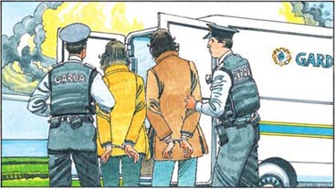
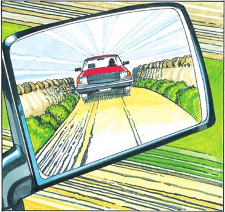
30 You go to the old house. There is some writing on the door of the house. It says, 'Go back to London, Ellison! We don't want you on our island.'
The next day you drive to Clayonag in the north of the island. There are a lot of megalithic stones in Clayonag. You drive up a small road. The road is bad. You look behind you and you see a red car. You drive fast. The red car goes fast. You go down a hill.
■You drive slower. Go to 7.
■You drive very fast. Go to 12.
■You stop your car. Go to 25.
31 You run through some trees. You come to a small road. You run down the road and you see your house and the megalithic stone. There are some boxes in a car near the stone. You go to a box and look into it. There are cups and knives in the box. They are very old. You think they are about 4,000 years old. Now you see a hole in the hill. The hill is a megalithic tomb. Somebody is taking things from the tomb.
You hear a noise and you see Sarah, the American woman. She is coming out of the tomb with a knife in her hand.
■You do not move. Go to 14.
■You run away. Go to 35.
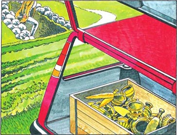
32 You walk to a village and phone a garage. Three hours later a man comes. He works on the car for a long time. At four o'clock the car is ready.
■You find a policeman. Go to 10.
■You drive home. Go to 16.
■You look at more megalithic stones and tombs. Go to 6.
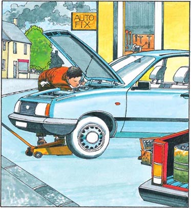
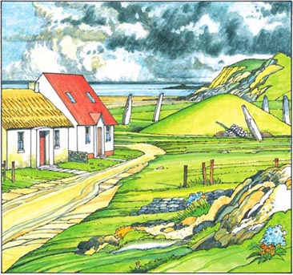
33 You move the tree from the road. You get in your car and continue down the road. Five minutes later, you see two houses. There is an old house and a new house. You are renting the old house.
There is a small hill near the houses. There are megalithic stones around the hill.
'This is a nice place to live,' you think.
You get out of your car. You look at the stone. You think it is about 4,000 years old.
■You walk around the hill. Go to 4.
■You go to the old house. Go to 18.
34 Near the megalithic stones is a hill. You walk to the hill. There is a door in the hill. On the door there is some writing. It says, 'Megalithic Tomb. 4,500 Years Old.'The door is open. You look in the tomb. It is very dark.
■You walk to the stones. Go to 2.
■You go to the village and ask about the stones. Go to 8.
■You go into the tomb. Go to 13.
■You go to the sea. Go to 22.
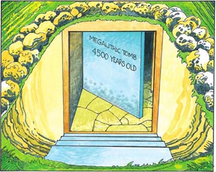
35 You run away but you fall on the boxes.
■Go to 14.
ACTIVITIES Before Reading
ACTIVITIES
Before Reading
1. Look at the front and back cover of the book. Choose the correct answers to these questions.
1) Where can you find these megalithic stones?
a Mexico.
b Ireland.
c Japan.
2) How old are the stones?
a 1,500 years old.
b 2,500 years old.
c 4,500 years old.
3) What are the stones for?
a Nobody knows.
b They are the walls of an old building.
c A place for dead people.
2. Guess what happens in the story.
a Somebody doesn't want Chris to study the stones.
YES/NO
b Somebody wants to take the stones to America.
YES/NO
c Somebody on the island is killing people.
YES/NO
d The stones can kill people.
YES/NO
ACTIVITIES While Reading
ACTIVITIES
While Reading
1. Read the first parts of the story (1, 11 and 33). Are these sentences true (T) or false (F)?
1) Chris Ellison is from America.
T/F
2) The megalithic stones are in England.
T/F
3) Chris Ellison goes to the island by plane.
T/F
4) Chris thinks he sees somebody behind the trees.
T/F
5) There is a small hill near the megalithic stone.
T/F
6) The American woman says she is working on the island.
T/F
7) The American woman is friendly.
T/F
8) Chris does not like where he lives.
T/F
2. Why do these things happen?
1) The people on the island do not like archaeologists. Why? Choose one answer.
a Because archaeologists take things from tombs.
b Because the megalithic stones are very important for them.
c Because the people on the island are doing something bad with the stones.
2) A tree falls in front of the car. Why? Choose one answer.
a Because the tree is very old.
b Because somebody wants to kill Chris.
c Because somebody does not want Chris to go to his house.
3. What happens next? Complete the sentences.
1) The next day . . .
a Chris studies some megalithic stones.
b he stays at home.
c he talks to people in the town.
2) Somebody . . .
a tells Chris a lot of things about the megalithic stones.
b tries to kill Chris.
c helps Chris find a tomb.
3) The American woman . . .
a wants to help Chris.
b wants Chris to go home to England.
4) The people on the island . . .
a help Chris.
b don't help Chris.
5) Later near the megalithic stones Chris finds . . .
a a tomb.
b a dead person.
c a very old knife.
ACTIVITIES After Reading
ACTIVITIES
After Reading
1. Answer these questions.
1) Who does Chris meet on the ferry?
2) Where is the American woman's house?
3) What does Chris see on the door of his house?
4) When Chris is driving to Clayonag he sees something behind him. What is it?
5) Chris sees something under the car. What is it?
6) There are some boxes near the stones. What does Chris see in the boxes?
7) Who do the police arrest?
2. A policeman is asking Chris some questions. Put the words in the correct order. Then write the answers to the questions.
1) are where from you?
____________________________
____________________________
2) do what do you?
____________________________
____________________________
3) you why on are the island?
____________________________
____________________________
4) staying are where you?
____________________________
____________________________
5) is who tall the man?
____________________________
____________________________
3. Match the sentence halves to make eight complete sentences.
1) The American woman wants Chris to ...
2) The American woman does not want Chris to ...
3) The tall man is helping ...
4) The tall man hits Chris's car with a stone because ...
5) Clayonag is ...
6) When the sun shines into the door, the people ...
7) The man works on the car for a ...
8) The American woman does not see that ...
a begin to sing.
b long time.
c near the sea.
d the American woman.
e go to Clayonag.
f the stone is falling.
g see the treasure.
h Chris is coming home early.
参考译文
参考译文
The White Stones
白色巨石
1 你叫克丽丝·埃利森，来自英国伦敦。你在摆渡船上。摆渡船开向爱尔兰的斯卡兰岛。你坐在一位女士旁边。她微笑着。
“你是在度假吗？”她问。
“不是，”你说，“我是考古学家。我想研究一下斯卡兰岛的巨石。这些石头很有意思。它们很古老，可我们对它们了解并不多。”
这位女士收起笑容。“岛上的人不喜欢考古学家，”她说。
■ 看第11节。
2 你走向巨石。有九块大石头和一块小石头。其中两块十分巨大，顶部还有另一块。
你看着那块小石头。石头的顶部是红色的。
■ 看第34节。
3 你想打这个人，但他先打了你。
■ 看第24节。
4 你围着小山走。你看到山后有一辆红色的车。车里有几个箱子。
■ 你去旧房子。看第18节。
5 你看到有液体从车底部的一个洞流出来。
■ 你给一家修车厂打电话。看第32节。
■ 你开车回家。看第19节。
6 你上车。你看了岛北部其他的巨石和坟墓。它们在晚上看起来很漂亮。巨石的附近总会有坟墓。你很晚才回家。
第二天，你去了朗格鲁城。你去几家商店买了些东西。接下来你做什么？
■ 你回家。看第16节。
■ 你去克劳纳格巨石阵。看第20节。
7 你慢慢地开车下山。10分钟后，你看看后面。你看不到那辆红色的车了。你经过一个村庄，然后开车下山去克劳纳格。你看到海边有很多巨石。非常漂亮。你停下，下了车。
■ 看第34节。
8 你去村子里，问人们有关巨石的事。没人想谈论巨石。
■ 你回家。看第28节。
■ 你回到克劳纳格。看第34节。
9 你朝坟墓的门里看去。坟墓的后部有一张石桌，太阳照得桌子闪闪发光。
■ 看第27节。
10 你去村子里，找到一名警察。你告诉他发生在你身上的事。
他说：“村子里的人不喜欢考古学家，因为他们拿走我们的财宝。也许你应该回伦敦去。”
■ 你回到旧房子。看第16节。
■ 你去看岛上其他的巨石。看第6节。
11 半个小时后，摆渡船停在了岛的岸边。你上了车，驶离摆渡船。你沿着一条小路开车。你前方的路旁有几棵树。其中一棵树在晃动。你赶紧停车。这棵树在你眼前倒下了。
你下了车。
“树后面有人吗？”你问道。你要做什么？
■ 你去树林那里找找是否有人。看第23节。
■ 你把树从路上移开。看第33节。
12 你开得很快，但路况不好。你的车驶离道路。随后一切都陷入黑暗了。
■ 看第24节。
13 你进入坟墓。你看到墙上有几幅刀子的画。你听到有动静。一切都在黑暗中。你走到门口。你打不开门。
“开门！”你喊道，但没有人来。
你害怕了。你等了很长时间，但没有人来。
■ 你去坟墓的后部。看第17节。
■ 你呆在门附近。看第26节。
14 这个美国女人向你走近一些。突然，一块巨石开始动起来。石头在这个女人的后面。她没看到石头在动。
“看！”你说，“石头要倒了！”
她笑了。“要知道，我可不傻，”她说。
她没有向后看。巨石发出巨响，倒在了这个女人身上。
你看到了那个留着黑色长发的男人。他正沿着路走来。当看到石头下的女人时，他跑了。
■ 看第29节。
15 你开车到你的住处，下了车。那个美国女人正站在你房子的附近。她笑着。
“你明天想去克劳纳格巨石阵吗？”她问。“我不能和你去，但那会是既有趣又重要的一天。6月21号。一年中最长的一天。每年这个时候很多人都去克劳纳格巨石阵。你必须一早就去。”
“谢谢你，”你说。你进了房子。
■ 看第21节。
16 你开车回家。到了房子附近时，一块大石头打中了车的挡风玻璃。你马上停车。你下车。你身后是一个高个子男人，留着长长的黑发。他向你跑来。
■ 你逃跑。看第31节。
■ 你打这个男人。看第3节。
17 你去坟墓的后部。那里有张石桌。桌子旁有一块大石头。你拿起石头，回到门口。你用石头砸门。你砸开门，从坟墓出来。
■ 看第28节。
18 你在旧房子附近遇到一个金发女人。“你好，”她说，“你住在这所旧房子里吗？”
“是的，”你说，“我租了六个星期。”
“我叫萨拉。我住在新房子里，”她说，“我来这儿度假，从美国洛杉矶来。你是来度假的吗？”
“不是，”我说，“我是考古学家。我想研究一下岛上的巨石。”
“真有意思！我对那些东西一无所知，”她说道。
■ 你走向旧房子。看第30节。
19 你开着车。下山时你刹不住车了。你的车撞上了一棵树。
■ 看第24节。
20 你去看克劳纳格的巨石阵。你看着石头，等待着，但什么也没发生。你很晚才回家。
接下来的两个星期，你去看岛上各处的巨石。没再发生什么事。你没有找出谜团的答案。
■ 看第1节，再试一遍。
21 第二天，你起得很早。你开车去看克劳纳格的巨石阵。赶到时，你看到很多车。你下车朝坟墓走去。坟墓附近有很多人。他们看着太阳，等待着。
太阳慢慢升起，阳光射入两块巨石之间。阳光照进墓门时，人们开始唱歌。
■ 你朝墓门里看去。看第9节。
■ 你没有朝墓门里看。看第27节。
22 你去了海边。那里很美，可你没有看到任何人，也没看到巨石。
你回到坟墓旁。你觉得看到了一个人。他藏在某块巨石后面。
■ 看第34节。
23 你跑进树林。你看到一个留着黑色长发的高个子男人。他跑掉了。你回到车里。
■ 看第33节。
24 你睁开眼时，发现自己躺在一个白色房间的床上。一个女人看着你。“你好，”她说，“我是奥康纳医生。现在你没事了。你在医院里。”
一个星期后，你出院了。你没有找到谜团的答案。
■ 回到第1节，重新开始！
25 你停下车，向后看。红色的车也停了。
■ 看第7节。
26 你呆在门附近。四个小时后，门开了。你出了坟墓。天已经黑了。坟墓附近一个人也没有。你觉得你看到了一个男人。他正朝公路跑去。
■ 你上了车，开车回家。看第15节。
27 一个小时后，人们纷纷上车，离开了克劳纳格。你回到自己的车旁。车下方的路上有一些液体。
■ 你查看车下方。看第5节。
■ 你开车回家。看第19节。
■ 你给修理厂打电话。看第32节。
28 你回家去。到老房子附近时，你看到一辆红色的车。车旁有个男人。他个子很高，留着黑色长发。他和那个上了年纪的美国女人在一起。他一看见你，就上了车，开车走了。
■ 看第15节。
29 你打电话报警。警察10分钟后到了。警察看着石头。“都这么多年了，石头怎么现在倒了？”一名警察说道。
“这是个谜，”你说。
警察移开石头，把那个女人送进医院。警察逮捕了长发男人和摆渡船上的女人。
多亏了你，现在岛上的财宝安全了，考古学家们可以研究古墓了。
30 你回到老房子前。门上写着字：“回伦敦去，埃利森！我们不希望你在我们的岛上。”
第二天，你开车去岛北部的克劳纳格。克劳纳格有很多巨石。你开上一条小路。路况很糟。你向后看，看到一辆红色的车。你加快车速，红车也加快了车速。你开下小山。
■ 你减慢车速。看第7节。
■ 你开得很快。看第12节。
■ 你停下车。看第25节。
31 你跑着穿过树林。你来到一条小路旁。你沿着路跑，看到了你的房子和巨石。巨石附近有一辆车，车上有几个箱子。你走到一个箱子旁，向里看。箱子里有一些杯子和刀。它们都很古老。你估计它们有大约4,000年的历史了。这时你看到小山上有个洞。这座小山是一座巨石墓。有人正在从坟墓里往外拿东西。
你听到有动静，然后看到了那个美国女人萨拉。她正从坟墓里出来，手里拿着一把刀。
■ 你没有动。看第14节。
■ 你跑开了。看第35节。
32 你走到一个村子，给一家修理厂打电话。三个小时后，来了一个男人。他花了很长时间修车。四点钟时，车修好了。
■ 你找到一个警察。看第10节。
■ 你开车回家。看第16节。
■ 你去看其他巨石和坟墓。看第6节。
33 你把树从路上移开。你回到车上，继续向前开。五分钟后，你看到两座房子：一座老房子和一座新房子。你租了老房子。
两座房子附近有座小山，山的周围有几块巨石。
“住在这里很不错，”你想。
你下了车，看着巨石。你估计它大约有4,000年的历史。
■ 你绕着山走。看第4节。
■ 你走向老房子。看第18节。
34 巨石附近有一座小山。你走向小山，山上有扇门，门上写着字：“巨石墓，有4,500年历史。”门开着。你朝墓里看去。里面很黑。
■ 你走向巨石。看第2节。
■ 你去村里打听巨石的情况。看第8节。
■ 你走进坟墓。看第13节。
■ 你去海边。看第22节。
35 你想跑开，但却绊倒在箱子上。
■ 看第14节。
封底
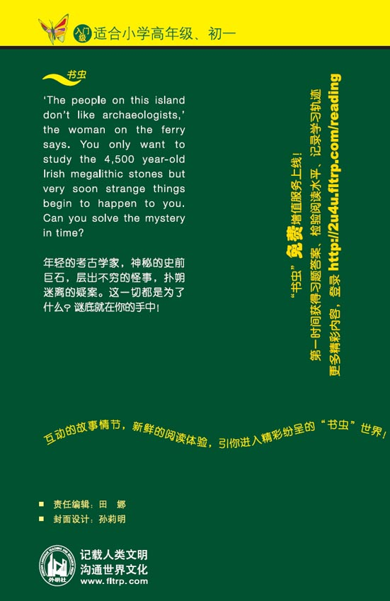